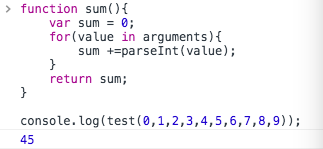

JavaScript创建对象的多种模式
- 工厂模式
1 | function createPerson(name, age, job){ |
工作模式是通过一个函数返回一个对象，但是有个问题是：新建对象实例和普通的调用函数没有辨识度。
- 构造函数模式
1 | function Person(){ |
- 和工厂模式相比，构造函数模式，没有显示地创建对象，并返回，而是直接将属性和“静态“方法赋值给this对象。使用new操作符新建实例，this对象引用的是以Person对象为模板的新对象。
- 使用new操作符这种方式调用构造函数，实际上是经历了下面四个步骤：
- 创建一个新对象；
- 将构造函数的作用域赋值给新对象（因此this对象引用的是新对象，而不是原型对象）；
- 执行构造函数的代码；
- 返回这个新对象。
上面的工厂模式也是经历的这几个步骤，不过工厂模式是在构造函数中使用new操作符新建对象实例。
使用构造函数模式，解决了“标识函数和类型”的问题，但是如果在构造函数内部新建函数就会有个问题：
在实例person1和person2中都sayName函数，虽然功能相同，
但是他们却是开辟了两个空间，新建了两个函数，因为他们各自在不同的作用域中。
避免重复新建同样功能函数，避免冗余可以这样做：
1 | function Person(name, age, job){ |
这样做也带来一个新的问题：
为了避免同功能函数的冗余，然后我们把这些”静态函数”都放在了全局作用域中，而在新对象中进行引用。但是一旦函数多起来，封装性就会失去，一堆函数在全局作用域，这样也污染全局作用域。我自己的一个折中的做法是：用“+function(){ /*代码/ }()”包裹。js提供另外一种方法：原型模式*
- 原型模式
构造函数会有一个prototype属性，他存放的是一个指针，指向原型对象，实例也是有个功能相同的内部属性[[prototype]] / __proto__(__proto__属性只在FireFox、chrome、Safari得到支持)指向原型对象，而原型对象中则有一个属性，constructor，他指向构造函数，而prototype是原型模式的核心：
- prototype / [[prototype]]，该属性存放的是一个指针，指向原型对象；
- 原型对象的属性：constructor，该属性存放的是一个指针，指向构造函数；
1 | +function(){ |
更简单的原型语法
将对象赋值给prototype属性，即使用字面量的方法简写为：
1 | Person.prototype = { |
这样虽然可以很好的简写，但要注意的一点是，这样做相当于重写了原型对象，constructor不再指向Person，而是指向Object构造函数。如果要使用到这个属性，就要手动将constructor指向Person
1 | Person.prototype = { |
这样做，也并非和默认获得的constructor属性相同，因为该属性是手动添加的，那么内部属性[[Enumerable]]是默认为true的，而默认获得的constructor的枚举是false的。可以使用defineProperty方法设置
1 | Object.defineProperty(Person.proptotype, 'constructor', { |
- 只用原型模式的问题
原型模式最大的问题是由他的共享性引起，在属性还是基本类型的时候还没有什么问题，但如果是引用类型，问题就很明显了。
1 | function Person(){} |
如果一开始就是打算共享这个数组还好说，但是更多时候这种情况是希望每个对象实例拥有独立的数组。这也是，比较少单独使用原型模式的原因。
- 小插曲：实例对象中建立和原型对象属性同名的属性，会屏蔽原型对象的属性，就算将实例对象中的同名属性赋值为null也不能取消屏蔽，但是可以使用 delete 操作符 删除实例对象中的同名属性，可以重新访问到原型对象中的同名属性。
- hasOwnProperty可以用来判断属性是不是属于实例对象
- 组合原型模式和构造函数模式
从上面的构造函数模式和原型模式，可以知道，构造函数模式，定义的属性和方法是非共享的，在新建对象实例时复制了一份属性副本(没有必要在这里定义方法，因为方法功能一样，不必给每个实例分配一个副本，这是冗余，浪费内存)，都是独立的；而用原型模式构造的属性和方法是共享的，每个属性调用的原型属性和方法都是共享的，相当于静态的属性/方法。
结合这两个特点，可以以构造函数模式定义实例属性/方法（非共享），以原型模式定义静态方法/属性（共享）
1 | //构造实例属性 |
- 寄生构造函数模式
个人是认为这种模式适合用在原生对象上进行扩展，这样也很适合“寄生”这一词。
1 | //给Array添加一个特殊的方法，但是有不污染Array对象 |
一个小插曲，也是写到这里才知道，函数可以不写形参，而直接从arguments对象（数组）中获取实参。
- 小结：主要介绍了以下五种创建对象的模式。
- 工厂模式;
- 构造函数模式；
- 原型模式；
- 组合原型模式和构造函数模式；
- 寄生构造函数模式；